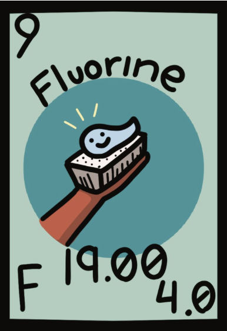

Atomic Number : 9
Atomic Mass : 19.00
Proton Number : 9
Neutron Number : 9
Category : Halogen / Non - Metal
Fluorine compounds were known for many years before the element itself was discovered. In 1810, French scientist André-Marie Ampère suggested that hydrofluoric acid contained a new element. Many scientists tried to isolate fluorine, but its extreme reactivity made it very difficult and dangerous to obtain. In 1886, French chemist Henri Moissan successfully isolated fluorine by electrolyzing hydrogen fluoride containing potassium fluoride. Moissan received the Nobel Prize in Chemistry in 1906 for his work on fluorine and the development of the electric furnace. The name fluorine comes from the Latin word “fluere,” meaning “to flow,” because fluorite minerals were used to help minerals melt more easily.
State at room temperature: Gas Colour: Pale yellow Odour: Strong and irritating Taste: Not applicable; fluorine is toxic Density: 1.696 g/L Melting point: −219.67°C Boiling point: −188.11°C Solubility: Reacts with water Molecular form: Usually exists as F₂
Fluorine is an extremely reactive non-metal and is the most reactive element on the periodic table. It reacts readily with many elements and compounds. Fluorine reacts with hydrogen to form hydrogen fluoride: H₂ + F₂ → 2HF It reacts with many metals to form metal fluorides. Fluorine can also react with water, producing hydrogen fluoride and oxygen-containing products. Fluorine has 7 valence electrons and usually forms compounds by gaining one electron. Because fluorine is extremely reactive, it is rarely found as a pure element in nature.
Fluorine is not usually found as a free element in nature because it is extremely reactive. It is mainly found in minerals such as fluorite, cryolite, and fluorapatite. Fluorine is also found in small amounts in soil, water, plants, and animals. Fluoride compounds can occur naturally in groundwater and rocks. Fluorine is present in Earth's crust mainly in the form of fluoride minerals. Because fluorine reacts so easily with other elements, it is almost always found combined with other elements.
Fluorine compounds are very useful and are used in many different areas. Fluoride compounds are used in toothpaste to help protect teeth from decay. Fluorine compounds are also used to make non-stick materials such as Teflon. They are used in the production of refrigerants and other industrial chemicals. Fluorine compounds are used to make certain medicines and pharmaceutical products. Fluoride compounds are also used in some glass and metal processing industries. Because fluorine forms strong bonds with many elements, its compounds are especially useful in medicine, materials, manufacturing, and dental care.


Fluorine is the most reactive and most electronegative element on the periodic table. Fluorine is a pale yellow gas at room temperature. Fluorine has 9 protons and 9 electrons in a neutral atom. Fluorine has 7 valence electrons and needs only one more electron to complete its outer shell. Fluorine is extremely reactive and can react with many other elements. Fluorine is rarely found as a pure element in nature because it quickly combines with other elements. Fluoride compounds are commonly used in toothpaste to help prevent tooth decay. Fluorine compounds are also used to make materials that are resistant to heat, chemicals, and water.